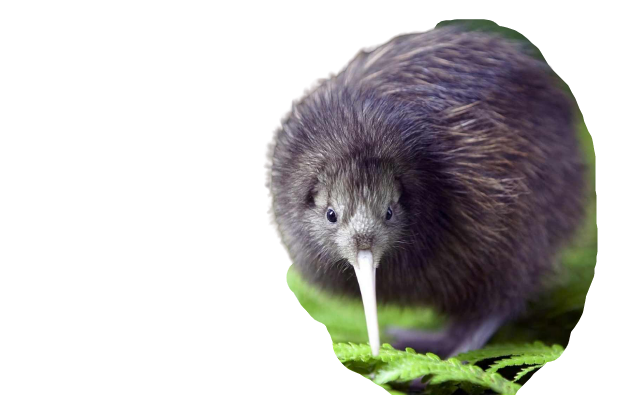

Bienvenue en Nouvelle-Zelande
Le Haka et la culture maori
Le haka est fondamentale pour comprendre la culture maori. Dans la mythologie Tane-Rore, le fils du dieu soleil Tama-nui-to-ra et Hine-raumati, dame de l’été, et qui represente est le tremblement de l’air vu lors des journées chaudes de l’été.
Le tremblement des mains lors des differents haka est une representation de Tane-Rore. Ce que ça nous montre surtout est la proximité de l'homme à la nature. Dans la culture maori chaque evenement naturel est lié à un dieu ou une deese et se doit d'etre respecter, aimer voir combatu.
On prend souvent le haka comme un chant guerrier et ce serait une erreur. Par exemple celui qui a été fait à ce mariage est la representation de l'inquietude d'un pere et son accompagnement face à l'adversité.
Le fameux haka Ka Mate des all-blacks c'est une danse qui racconte l'angoisse et le soulagement d'un guerrier obligé de se cacher. Le haka est aussi un formidable transfert d'energie, pour en avoir vu un en vrai pratiquer par des personnes ayant habité la bas, il y a une transe qui se créé. Les personnes dans le haka donnent tout ce qu elles ont.
c'est pour toutes ces raisons que je reve d'y aller, la nature sauvage, les gens genereux, la ferveur autour d'un sport qui transmet des belles valeurs. ah et si vous vous posiez la question de pourquoi gollum en curseur et du langage elfique c'est tout simplement que la majorité du seingneur des anneaux et de ses paysages sont des paysage de nouvelle zelande!
Allez petit cadeau pour que vous compreniez pourquoi ces paysages m'attire c'est par ici

La nouvelle Zelande un reve de gosse
Je quitte ici la confortable position d'un voyageur pour celle d'un reveur. Et oui je ne suis jamais allé en Nouvelle Zélande (du moins pas encore) et c'est pourtant un rêve de gosse.
Je vais commencé par le coté le plus évident, j'aime le rugby, je suis un ancien joueur et toujours spectateur. Les all-blacks (nom de l'equipe national de rugby) sont les dieux de ce sport.
Chaque année il innove, change, et transforme chaque poste, ce qui rend le jeu toujours plus interessant(notamment car les autres équipes doivent trouver un moyen de s'adapter)
L'équipe de rugby est un patchwork d'origine où l'on trouve autant de kiwis (l'oiseau pas le fruit ! ) d'origine etrangere que de maori.
d'ailleur allons voir ça d'un peu plus pres, cliquez sur le Kiwi 